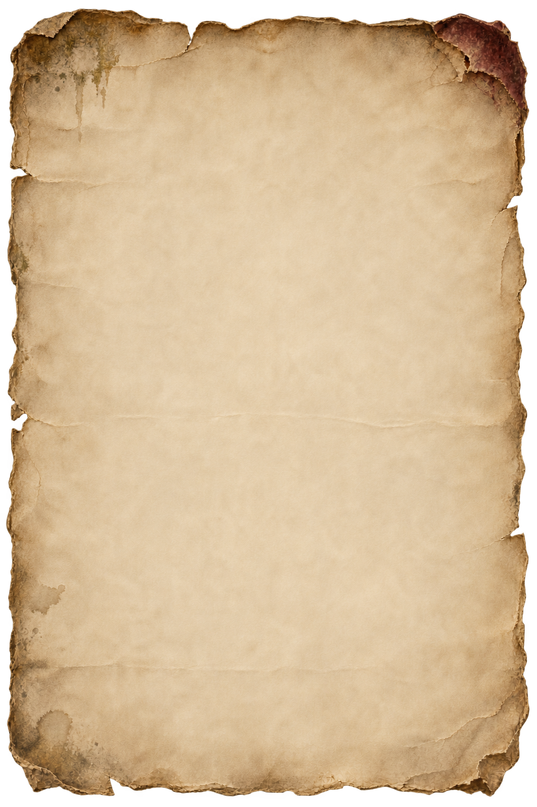

▼
NORMAL END
通常エンド達成次の旅では、B30の遺書の宝箱を開けられます。
端末を横向きにしてください。
ゲームを遊ぶにはJavaScriptを有効にしてください。
失くした記憶を、ひとつずつ。

私の自我は、じきに消え去るようだ。
魔王に敗れてから、 思い出せなくなることが一つずつ増えていく。 君の名前まで忘れてしまう前に、 これだけは書いておきたい。
妻に似た、あの青い目。 君は今、いくつになったのだろう。 一目、会いたかった。
帰ると約束したのに、守れなくてすまない。 どうか、君の道を歩いてほしい。 ずっと君を想っている。
父より
名前も、顔も、思い出せない。それでも、上へ行かなければ。
操作練習はオプションの「準備チュートリアル」「探索チュートリアル」から開けます。
1つ選ぶと、この旅の間ずっと有効になります。
説明を読み、3つから1つ選んでください。取得した効果はこの旅の間、自動で発動します。
現在の階を試行した参考値です。未発見の敵や品物の位置は表示しません。
現在の旅は上書きされます。図鑑と通常エンド・TRUE ENDの達成記録は引き継ぎます。
現在の能力・装備・所持カード・記憶の欠片・遺書・回想は失われ、B30から新しい旅を始めます。
図鑑とエンド達成記録は引き継ぎます。
探索中は閲覧のみ。変更は準備中に行えます。
旅の途中で利用できます。
DEBUG TOOLS
操作は現在のセーブに反映されます。図鑑・達成記録を残す場合は、先にセーブを書き出してください。
骸の旅路／倅の旅路のタイトルを確認します。達成記録は保存されます。倅の旅路の本編は未実装です。
現在の旅をB30の探索に移動します。「探索を再開」で宝箱を取得します。
試聴はBGMのON/OFF・音量設定に従います。
デバッグを閉じると元の場面の曲に戻ります。
旅だけ：図鑑と達成記録を維持。全データ：図鑑・達成記録・旧版とバックアップも削除。このゲーム以外の保存には触れません。